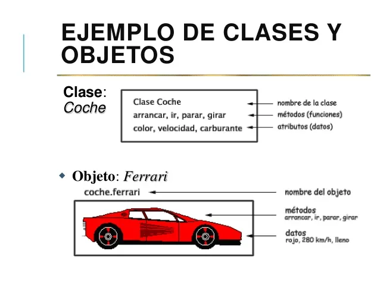
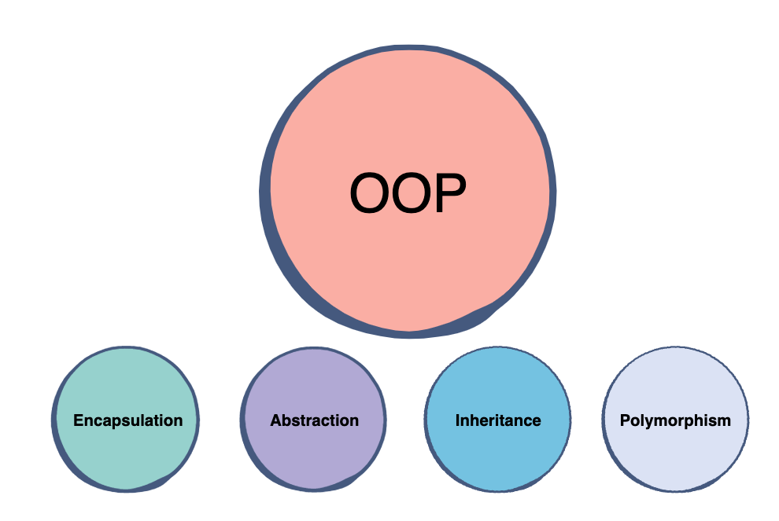
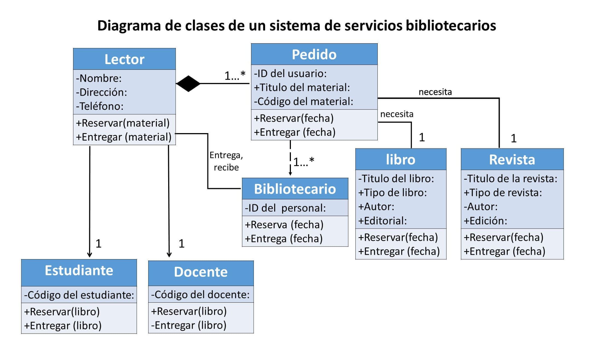

La Programación Orientada a Objetos (POO) es un paradigma que organiza el código en torno a clases y objetos. Facilita la reutilización y el mantenimiento del código al estructurar el software en piezas modulares e independientes.
Uno de los conceptos clave en la POO es la distinción entre clase y objeto:
Ejemplo:
Ejemplo en JAVA
class Coche {
public string Marca;
public string Modelo;
public int Año;
public void Conducir() {
Console.WriteLine(Marca + " " + Modelo + " está siendo conducido.");
}
}
// Crear un objeto Ferrari
Coche Ferrari = new Coche();
Ferrari.Marca = "Ferrari";
Ferrari.Modelo = "488 GTB";
Ferrari.Año = 2020;
// Llamar al método Conducir
Ferrari.Conducir();
La Programación Orientada a Objetos (POO) se basa en cuatro principios esenciales que permiten estructurar código de manera eficiente y reutilizable.
La encapsulación agrupa datos y métodos dentro de una clase, restringiendo el acceso directo a ciertos atributos y permitiendo su manipulación a través de métodos específicos.
Ejemplo: En una cuenta bancaria, el saldo está protegido y solo puede modificarse mediante métodos definidos.
class CuentaBancaria {
private double saldo;
public CuentaBancaria(double saldoInicial) {
saldo = saldoInicial;
}
public void depositar(double cantidad) {
saldo += cantidad;
}
public double consultarSaldo() {
return saldo;
}
}La abstracción permite representar un objeto resaltando sus características esenciales y ocultando detalles internos innecesarios.
Ejemplo: Un sistema de reservas de vuelos oculta la lógica interna al usuario.
from abc import ABC, abstractmethod
class ReservaVuelo(ABC):
@abstractmethod
def reservar(self):
pass
class ReservaEconomica(ReservaVuelo):
def reservar(self):
return "Reserva confirmada en clase económica."
reserva = ReservaEconomica()
print(reserva.reservar())La herencia permite que una clase derive de otra, heredando sus atributos y métodos para evitar la repetición de código.
Ejemplo: En un sistema escolar, la clase
Persona es base para Estudiante y
Profesor.
class Persona {
public string Nombre { get; set; }
}
class Estudiante : Persona {
public string Carrera { get; set; }
}El polimorfismo permite que diferentes clases utilicen métodos con el mismo nombre pero con implementaciones distintas.
Ejemplo: Diferentes figuras pueden compartir
un método dibujar() con distintos
comportamientos.
class Figura {
virtual void dibujar() {
cout << "Dibujando figura." << endl;
}
};
class Circulo : public Figura {
void dibujar() override {
cout << "Dibujando un círculo." << endl;
}
};La Programación Orientada a Objetos ofrece diversas ventajas:
A continuación, un diagrama UML básico que representa la relación entre clases:
